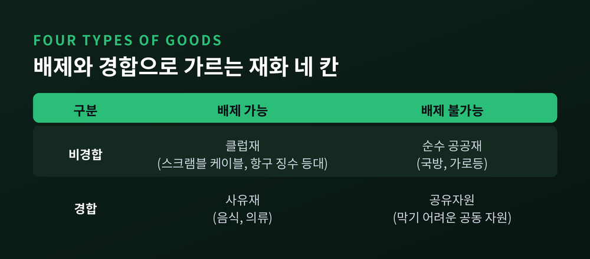
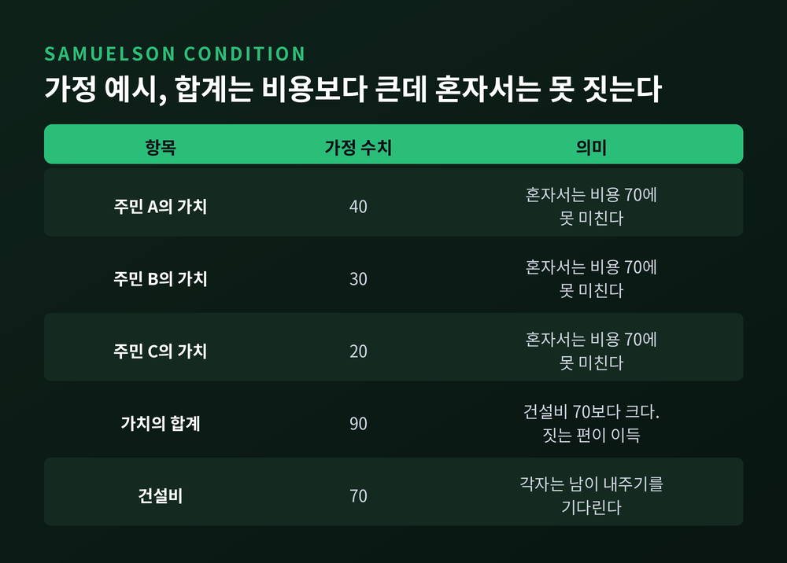
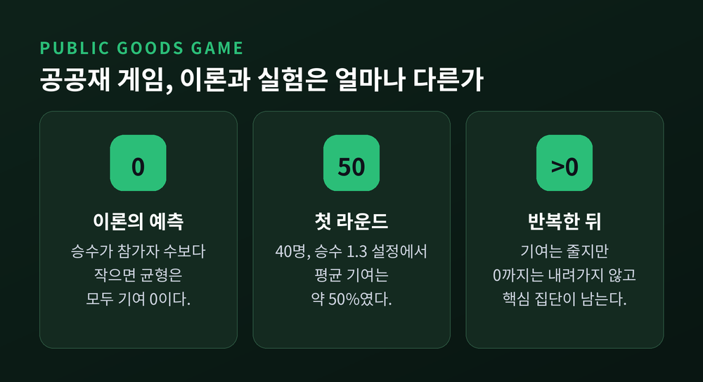
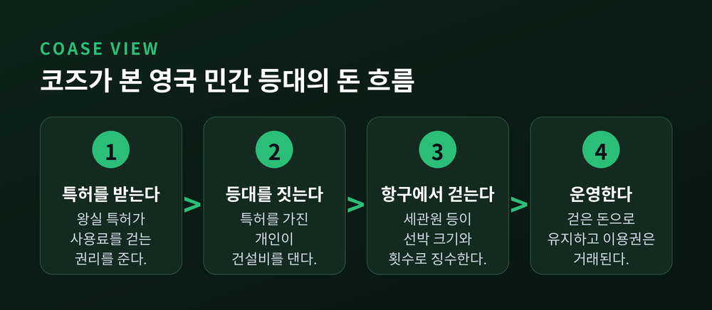
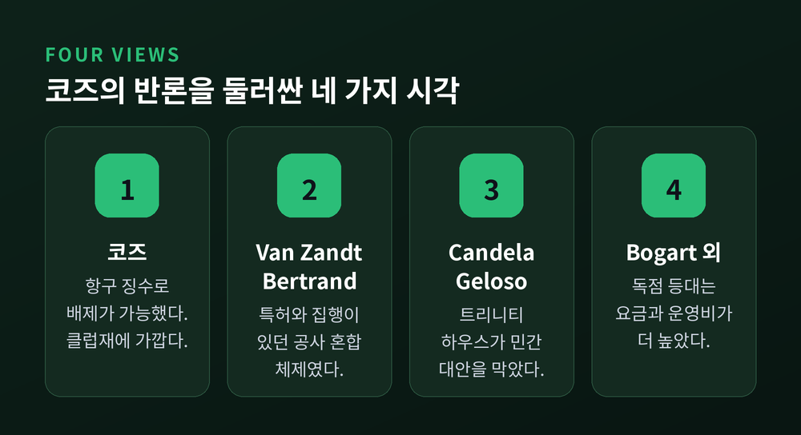
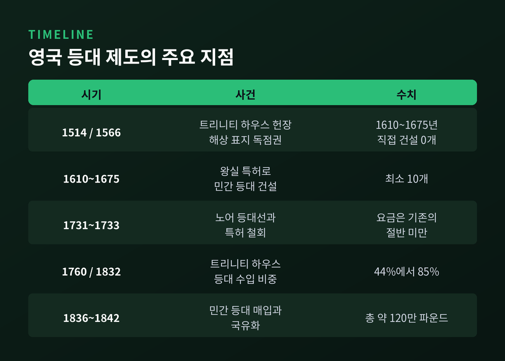

이번 글에서는 공공재와 무임승차 문제를 정리해 보겠습니다.
교과서가 오랫동안 등대를 대표 사례로 든 이유와, 코즈가 그 상식에 던진 반론을 함께 살펴봅니다.
결론부터 말씀드리면, 공공재는 시장이 만들지 못하는 물건이 아니라 "값을 받기 어려운 물건"에 가깝습니다.
공공재는 두 가지 성질로 정의됩니다.
하나는 비경합성입니다. 내가 쓴다고 다른 사람이 쓸 몫이 줄지 않습니다.
다른 하나는 비배제성입니다. 값을 내지 않은 사람을 막기 어렵습니다.
스탠퍼드 철학사전은 가로등과 교향곡으로 설명합니다. 가로등은 비용을 누가 냈든 이웃 모두를 비춥니다. 교향곡은 내가 듣는다고 옆 사람의 감상이 줄지 않습니다.
사무엘슨은 1954년 논문에서 이런 재화를 "집합적 소비재"라 불렀습니다. 한 사람의 소비가 다른 사람의 소비에서 아무것도 빼앗지 않는 재화입니다.
두 성질을 어떻게 갖추었느냐에 따라 재화는 네 칸으로 나뉩니다.
둘 다 갖추면 순수 공공재, 비경합적이지만 막을 수 있으면 클럽재입니다. 경합적이지만 막을 수 없으면 공유자원, 둘 다 아니면 사유재입니다.
이 구분은 뒤에서 코즈의 반론을 이해하는 열쇠가 됩니다.

사적재의 최적 공급은 단순합니다. 각 소비자가 느끼는 가치가 한계비용과 같아지는 점입니다.
공공재는 다릅니다. 같은 양을 모두가 함께 쓰므로, 모든 사람의 한계 평가를 더한 값이 한계비용과 같아야 합니다.
이것이 사무엘슨 조건입니다. 기호로는 개인별 한계대체율의 합이 한계변환율과 같다고 씁니다.
숫자를 가정해 보겠습니다. 실제 통계가 아니라 이해를 돕기 위한 예시입니다.
마을 세 사람이 등대에 매기는 가치가 각각 40, 30, 20이고 건설비는 70이라고 하겠습니다.
세 사람의 가치를 합치면 90이니 짓는 편이 사회 전체로는 이득입니다.
그러나 어느 한 사람의 가치도 70에 못 미칩니다. 혼자서는 지을 이유가 없습니다.

여기에 무임승차가 겹칩니다.
모두 짓기를 원하더라도, 각자는 남이 돈을 내주기를 기다립니다. 막을 수 없으니 기다려도 불빛은 똑같이 비추기 때문입니다.
스탠퍼드 철학사전은 두 사람 모델로 이를 보여 줍니다. 둘 다 공급을 바라지만 서로 상대가 내기를 바라는 탓에 공급이 무산됩니다.
이 문제는 새로운 것이 아닙니다.
흄은 『인간 본성에 관한 논고』에서 두 이웃이 공동 초지의 물을 빼는 일을 예로 들었습니다. 두 사람은 서로 마음을 알기 쉬워 합의할 수 있습니다. 그러나 사람이 많아지면 그런 계획을 짜기도, 실행하기도 어렵다고 보았습니다. 각자가 책임을 남에게 미루기 때문입니다.
현대에는 이를 실험실에서 확인했습니다.
공공재 게임에서 이론이 예측하는 균형은 모두가 한 푼도 내지 않는 상태입니다. 그런데 실제 피험자들은 달랐습니다. 40명, 승수 1.3 설정에서 첫 라운드 평균 기여는 약 50%였습니다.
반복할수록 기여는 줄었습니다. 무임승차자를 본 사람들이 발을 빼기 때문입니다. 다만 0까지 떨어지지는 않았고, 꾸준히 내는 핵심 집단이 남았습니다.
사람은 이론만큼 이기적이지 않습니다. 하지만 이타심만으로 큰 사업을 지탱하기에는 약합니다.
그래서 올슨은 큰 조직일수록 선택적 유인을 함께 묶어야 한다고 보았고, 많은 나라는 세금이라는 강제 징수를 택했습니다.

경제학자들은 한 세기가 넘도록 등대를 공공재의 상징으로 썼습니다.
밀은 1848년 정부가 등대를 짓고 유지하는 것이 정부의 적절한 일이라고 보았습니다. 시즈윅은 1883년 이렇게 말했습니다. 잘 세운 등대의 혜택은 통행료를 편리하게 물릴 수 없는 배들이 크게 누린다는 것입니다.
피구는 이를 보상받지 못하는 서비스의 사례로 가져갔고, 사무엘슨은 사업가가 이용자마다 가격을 청구할 수 없어 이익을 남기며 지을 수 없다고 썼습니다.
바다 위의 배에서 요금을 걷기 어렵다는 것은 분명한 사실입니다.
코즈가 던진 질문은 이것이었습니다. 실제 역사에서도 그랬는가.
1974년 코즈는 영국 등대의 역사를 직접 뒤졌습니다. 논문 제목은 「경제학 속의 등대」였습니다.
결과는 교과서와 달랐습니다.
영국 등대를 관리한 트리니티 하우스는 1514년 왕실 헌장을 받았습니다. 처음에는 해상 표지를 규제하는 기관이었고, 등대를 직접 짓기 시작한 것은 17세기에 들어서입니다.
Candela와 Geloso의 정리에 따르면 1610년부터 1675년까지 트리니티 하우스가 지은 등대는 0개였습니다. 같은 시기 최소 10개가 왕실 특허를 받은 개인들의 손으로 세워졌습니다.
비결은 요금을 걷는 장소였습니다.
바다 위가 아니라 항구에서, 세관원 등이 선박의 크기와 항해 횟수에 따라 등대 사용료를 받았습니다. 항구에 들어오려면 내야 하니 피할 수 없었습니다.
코즈는 그래서 등대를 막을 수 있는 서비스, 곧 클럽재에 가깝다고 보았습니다.

에디스톤 등대가 대표 사례입니다.
헨리 윈스탠리가 1699년에 완공했지만 1703년 대폭풍에 무너졌습니다. 건설비와 수입은 자료마다 차이가 있어, 대체로 건설비는 8천 파운드 안팎, 수입은 4천~5천 파운드 수준으로 전해집니다.
1705년 에디스톤 등대법이 징수권을 명문화했고, 존 스미턴이 석조로 재건한 탑(1759년 완공)은 1882년까지 운영되었습니다.
등대 이용권은 사고팔 수 있는 자산이기도 했습니다.
1836년부터 1842년 사이 의회가 트리니티 하우스에 민간 등대를 사들이게 했을 때 총비용은 약 120만 파운드였습니다. 스커리스 등대 하나에 44만 5천 파운드가 지급되었습니다.
1820년 기준 기존 등대 46개 가운데 트리니티 하우스가 24개, 민간이 약 22개를 운영했다고 코즈는 정리합니다.
코즈의 논문이 문제를 끝낸 것은 아닙니다. 반박도 만만치 않았습니다.
David Van Zandt는 이 체제를 순수 민간이 아닌 공사 혼합으로 보았습니다. Elodie Bertrand는 왕실 특허, 의회 승인, 항만 당국의 징수가 있었기에 작동했다고 지적했습니다.
요금을 걷게 해 준 것은 시장이 아니라 국가의 권한이었다는 논리입니다.
Bogart 등의 2022년 연구는 독점 구역의 등대가 지역 재원 등대보다 요금도 운영비도 높았다고 보고했습니다.
코즈의 재반박은 이렇습니다. 정부가 재산권을 보장하고 집행한다고 해서 민간 기업이 아니게 되는 것은 아닙니다.
논쟁은 지금도 이어집니다. 어느 쪽 말이 맞는지 한 줄로 가르기는 어렵습니다.

한 가지 흥미로운 대목이 더 있습니다.
Candela와 Geloso의 자료에 따르면 트리니티 하우스 수입에서 등대와 부표가 차지하는 비중은 1760년 44%에서 1832년 85%로 올랐습니다. 같은 기간 실질 수입은 4.44배가 되었습니다.
반면 민간 운영자 19곳의 요금을 1768년부터 1832년까지 추적하니 명목 요금을 바꾼 곳이 없었습니다. 물가가 약 두 배가 되는 동안 실질 요금은 대략 50% 떨어졌습니다. 특허가 요금을 묶어 둔 탓입니다.
1731년 노어 등대선은 또 다른 시도였습니다.
데이비드 에이버리와 로버트 햄블린은 사전 구독, 가격 차별, 런던 거래소의 자발적 기부로 재원을 마련했고, 요금은 기존 등대의 절반에도 못 미쳤습니다.
트리니티 하우스가 법적으로 다투자 특허는 1732년 5월 철회되었고, 에이버리는 1733년 11월 연 100파운드의 임대 조건을 받아들였습니다.
1822년 법으로 핵심 임대 3건 매입의 길이 열렸고, 1836년에는 완전 국유화에 이르렀습니다.
두 저자의 결론은 이렇습니다. 거래비용이 높았던 것은 시장의 본질적 한계가 아니라, 트리니티 하우스가 민간 대안의 형성을 막은 결과라는 것입니다.
코즈 자신은 1836년의 통합을 시장의 구제가 아닌 행정적 합리화로 보았다고 전해집니다.
다만 이 해석 역시 하나의 해석이라는 점은 밝혀 두어야 합니다.

정리하면 이렇습니다.
공공재의 본질은 사물의 종류가 아니라 "대가를 받아낼 수 있느냐"에 있습니다. 항구라는 길목이 있으면 등대도 클럽재가 되었고, 길목이 없으면 순수 공공재로 남습니다.
국방이나 기초 연구처럼 막을 방법이 끝내 없는 재화는 여전히 세금과 공적 공급의 몫입니다.
"배제할 수 있으면 시장이 움직이고, 배제할 수 없으면 제도가 필요하다."
등대를 시장이 짓느냐 정부가 짓느냐를 묻는다면, 저는 누가 요금을 걷게 해 주는지를 먼저 보라고 답하겠습니다.